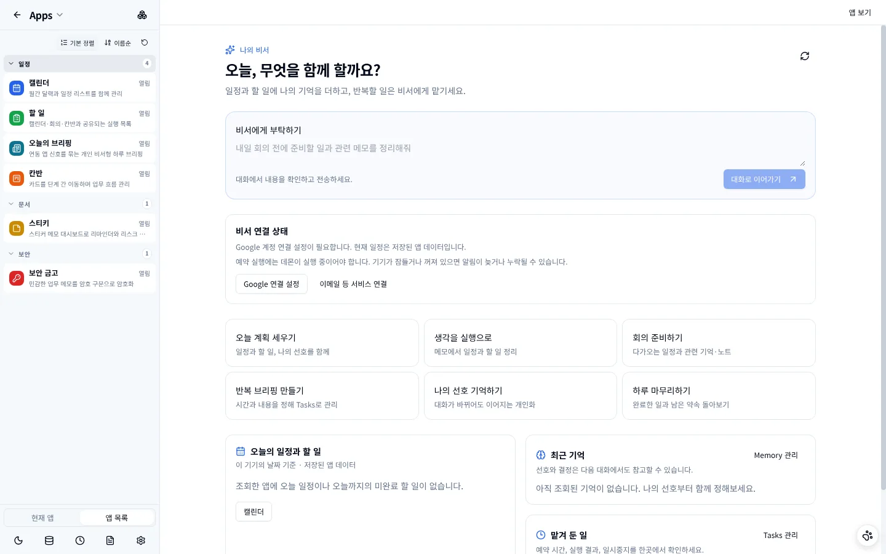

파일 첨부와 음성
파일과 이미지를 붙이고, 음성으로 입력하거나 답변을 낭독합니다.
대화마다 작업 폴더를 연결하면 에이전트가 파일을 읽고 명령을 실행해 근거를 모읍니다. 실행한 도구는 작업 로그로 접혀 남고, 답변에는 원인과 위치가 정리됩니다.

기본값인 알아서 선택은 요청 성격을 보고 실행 방식을 정합니다. 직접 고를 수도 있습니다.

비서 홈에서 오늘 계획 세우기, 회의 준비, 반복 브리핑 만들기, 하루 마무리 같은 일을 바로 시작합니다. 일정과 할 일, 기억해 둔 선호가 함께 반영됩니다.

캘린더, 할 일, 오늘의 브리핑, 칸반, 스티키, 보안 금고가 기본으로 들어 있습니다. 각 앱은 샌드박스 안에서 실행되고, 에이전트는 허용된 앱 데이터만 읽고 고칩니다.
월간 달력과 일정 목록을 함께 봅니다. 회의 일정은 할 일·칸반과 연결됩니다.

보안 금고는 암호 구문으로 업무 메모를 암호화해 보관합니다.
도구 카탈로그에서 그룹별로 켜고 끄며, 기본 대화가 차지하는 컨텍스트 크기를 바로 확인합니다. MCP 서버와 스킬도 같은 화면에서 관리합니다.


처음 실행하면 모델 제공자와 기본 작업 폴더만 고르면 됩니다. 나머지는 기본값으로 시작하고 언제든 설정에서 바꿉니다.


다크 모드로 바꾸고, 작업 상태를 알려 주는 데스크톱 펫을 다른 창 위에 띄울 수 있습니다.
파일과 이미지를 붙이고, 음성으로 입력하거나 답변을 낭독합니다.
위키, 개인 문서, 팀 문서, RAG 소스를 모아 대화에서 찾습니다.
SQLite 전문 검색과 벡터 검색, 장기 기억과 활동 기록을 관리합니다.
반복 브리핑과 정해진 시각의 작업을 Tasks에서 만들고 멈춥니다.
Slack, Telegram, Discord 등 채널과 발신 웹훅으로 결과를 보냅니다.
Chrome 확장으로 고른 탭 하나만 에이전트에게 맡기고 언제든 되찾습니다.
대화마다 작업 폴더를 정하고, 그 밖의 경로는 실행 범위에서 막습니다.
컨텍스트 사용량을 보며 긴 작업은 백그라운드로 돌립니다.
화면 언어와 테마를 설정에서 바꿉니다.
데몬이 앱 안에 들어 있어 따로 설치할 것이 없습니다. 모든 파일은 공개 저장소의 GitHub Actions가 빌드해 GitHub Releases에 올립니다.
macOS 빌드는 서명되지 않았습니다. 처음 실행할 때 Finder에서 앱을 우클릭한 뒤 열기를 선택하세요. 소스에서 빌드하려면 서브모듈과 함께 받습니다.